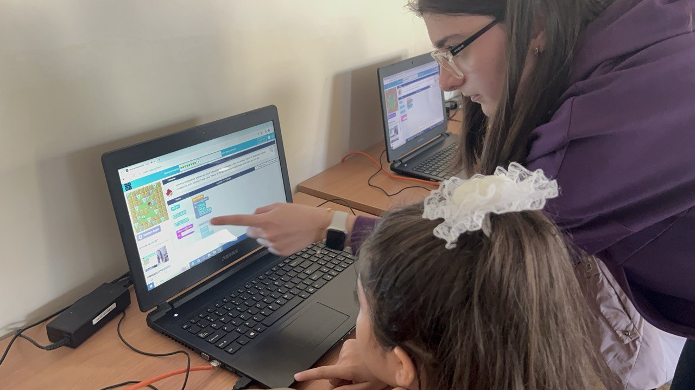
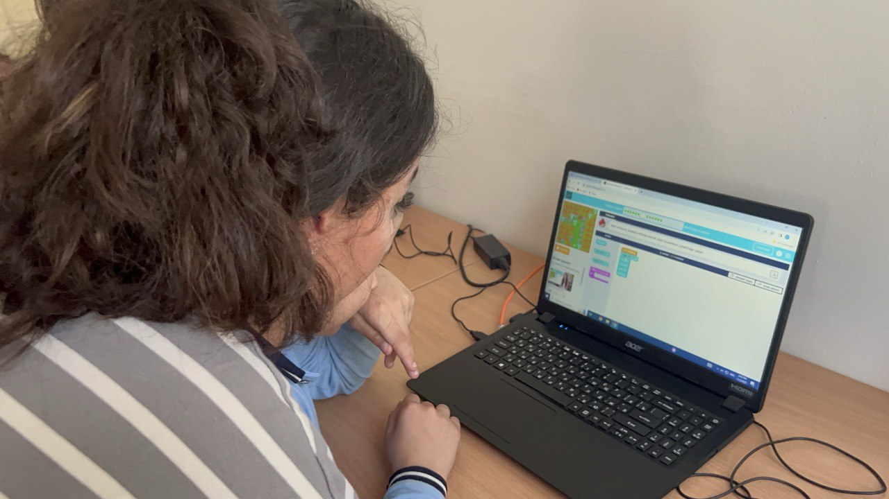
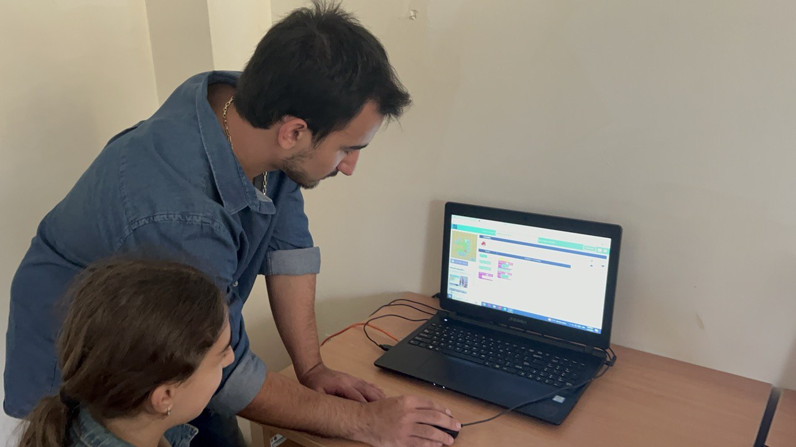
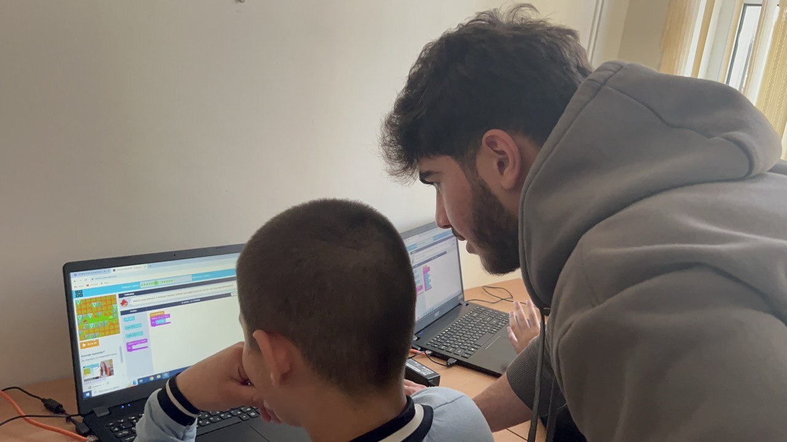
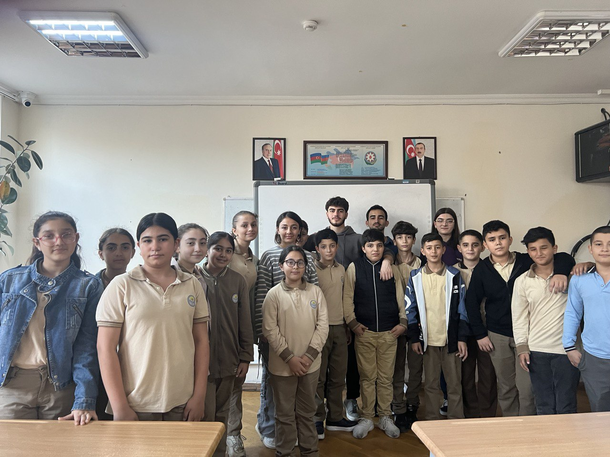

Picture 1 |
Picture 2 |
Picture 3 |
Picture 4 |
Picture 5 |
|  |  |  |  |  |
On November 2nd, as part of a group project, we engaged in the Hour of Code Campaign. From 15:00 to 16:00, sixth-grade students from Baku Secondary School No. 238 were introduced to coding basics using code.org puzzles. In our session, a total of 19-20 students actively participated. #HourOfCode #KodSaatı #SITE1101 #ADAUniversity